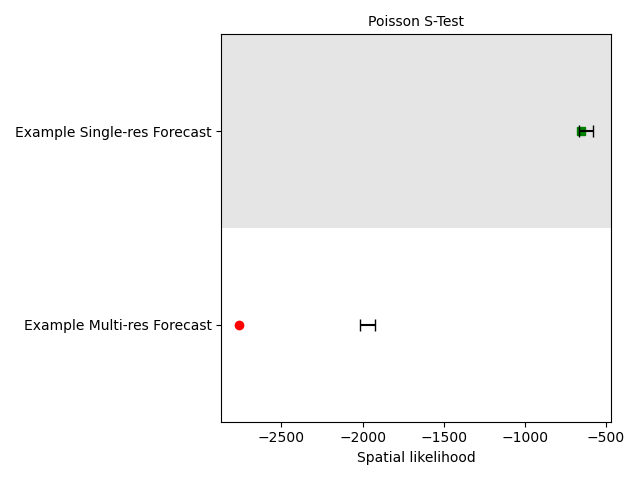
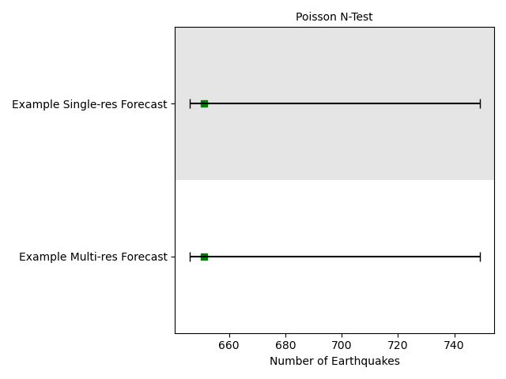

Note
Go to the end to download the full example code.
Quadtree Grid-based Forecast Evaluation
This example demonstrates how to create a quadtree based single resolution-grid and multi-resolution grid. Multi-resolution grid is created using earthquake catalog, in which seismic density determines the size of a grid cell. In creating a multi-resolution grid we select a threshold (\(N_{max}\)) as a maximum number of earthquake in each cell. In single-resolution grid, we simply select a zoom-level (L) that determines a single resolution grid. The number of cells in single-resolution grid are equal to \(4^L\). The zoom-level L=11 leads to 4.2 million cells, nearest to 0.1x0.1 grid.
We use these grids to create and evaluate a time-independent forecast. Grid-based forecasts assume the variability of the forecasts is Poissonian. Therefore, poisson-based evaluations should be used to evaluate grid-based forecasts defined using quadtree regions.
- Overview:
- Define spatial grids
Multi-resolution grid
Single-resolution grid
- Load forecasts
Multi-resolution forecast
Single-resolution forecast
Load evaluation catalog
Apply Poissonian evaluations for both grid-based forecasts
Visualize evaluation results
Load required libraries
Most of the core functionality can be imported from the top-level csep package. Utilities are available from the
csep.utils subpackage.
import numpy
import pandas
from csep.core import poisson_evaluations as poisson
from csep.utils import time_utils, plots
from csep.core.regions import QuadtreeGrid2D
from csep.core.forecasts import GriddedForecast
from csep.utils.time_utils import decimal_year_to_utc_epoch
from csep.core.catalogs import CSEPCatalog
Load Training Catalog for Multi-resolution grid
We define a multi-resolution quadtree using earthquake catalog. We load a training catalog in CSEP and use that catalog to create a multi-resolution grid.
Sometimes, we do not the catalog in exact format as requried by pyCSEP. So we can read a catalog using Pandas and convert it
into the format accepable by PyCSEP. Then we instantiate an object of class CSEPCatalog by calling function csep.core.regions.CSEPCatalog.from_dataframe()
dfcat = pandas.read_csv('cat_train_2013.csv')
column_name_mapper = {
'lon': 'longitude',
'lat': 'latitude',
'mag': 'magnitude',
'index': 'id'
}
# maps the column names to the dtype expected by the catalog class
dfcat = dfcat.reset_index().rename(columns=column_name_mapper)
# create the origin_times from decimal years
dfcat['origin_time'] = dfcat.apply(lambda row: decimal_year_to_utc_epoch(row.year), axis=1)
# create catalog from dataframe
catalog_train = CSEPCatalog.from_dataframe(dfcat)
print(catalog_train)
Name: None
Start Date: 1976-01-01 00:00:00+00:00
End Date: 2013-01-01 00:00:00+00:00
Latitude: (-77.16000366, 87.01999664)
Longitude: (-180.0, 180.0)
Min Mw: 5.150024414
Max Mw: 9.08350563
Event Count: 28465
Define Multi-resolution Gridded Region
Now use define a threshold for maximum number of earthquake allowed per cell, i.e. Nmax
and call csep.core.regions.QuadtreeGrid_from_catalog() to create a multi-resolution grid.
For simplicity we assume only single magnitude bin, i.e. all the earthquakes greater than and equal to 5.95
mbins = numpy.array([5.95])
Nmax = 25
r_multi = QuadtreeGrid2D.from_catalog(catalog_train, Nmax, magnitudes=mbins)
print('Number of cells in Multi-resolution grid :', r_multi.num_nodes)
Number of cells in Multi-resolution grid : 3502
Define Single-resolution Gridded Region
Here as an example we define a single resolution grid at zoom-level L=6. For this purpose
we call csep.core.regions.QuadtreeGrid2D_from_single_resolution() to create a single resolution grid.
# For simplicity of example, we assume only single magnitude bin,
# i.e. all the earthquakes greater than and equal to 5.95
mbins = numpy.array([5.95])
r_single = QuadtreeGrid2D.from_single_resolution(6, magnitudes=mbins)
print('Number of cells in Single-Resolution grid :', r_single.num_nodes)
Number of cells in Single-Resolution grid : 4096
Load forecast of multi-resolution grid
# An example time-independent forecast had been created for this grid and provided the example forecast data set along with the main repository.
# We load the time-independent global forecast which has time horizon of 1 year.
# The filepath is relative to the root directory of the package. You can specify any file location for your forecasts.
forecast_data = numpy.loadtxt('example_rate_zoom=EQ10L11.csv')
#Reshape forecast as Nx1 array
forecast_data = forecast_data.reshape(-1,1)
forecast_multi_grid = GriddedForecast(data = forecast_data, region = r_multi, magnitudes = mbins, name = 'Example Multi-res Forecast')
#The loaded forecast is for 1 year. The test catalog we will use to evaluate is for 6 years. So we can rescale the forecast.
print(f"expected event count before scaling: {forecast_multi_grid.event_count}")
forecast_multi_grid.scale(6)
print(f"expected event count after scaling: {forecast_multi_grid.event_count}")
expected event count before scaling: 116.18568954606255
expected event count after scaling: 697.1141372763753
Load forecast of single-resolution grid
# We have already created a time-independent global forecast with time horizon of 1 year and provided with the reporsitory.
# The filepath is relative to the root directory of the package. You can specify any file location for your forecasts.
forecast_data = numpy.loadtxt('example_rate_zoom=6.csv')
#Reshape forecast as Nx1 array
forecast_data = forecast_data.reshape(-1,1)
forecast_single_grid = GriddedForecast(data = forecast_data, region = r_single,
magnitudes = mbins, name = 'Example Single-res Forecast')
# The loaded forecast is for 1 year. The test catalog we will use is for 6 years. So we can rescale the forecast.
print(f"expected event count before scaling: {forecast_single_grid.event_count}")
forecast_single_grid.scale(6)
print(f"expected event count after scaling: {forecast_single_grid.event_count}")
expected event count before scaling: 116.18568954606256
expected event count after scaling: 697.1141372763753
Load evaluation catalog
We have a test catalog stored here. We can read the test catalog as a pandas frame and convert it into a format that is acceptable to PyCSEP Then we instantiate an object of catalog
dfcat = pandas.read_csv('cat_test.csv')
column_name_mapper = {
'lon': 'longitude',
'lat': 'latitude',
'mag': 'magnitude'
}
# maps the column names to the dtype expected by the catalog class
dfcat = dfcat.reset_index().rename(columns=column_name_mapper)
# create the origin_times from decimal years
dfcat['origin_time'] = dfcat.apply(lambda row: decimal_year_to_utc_epoch(row.year), axis=1)
# create catalog from dataframe
catalog = CSEPCatalog.from_dataframe(dfcat)
print(catalog)
Name: None
Start Date: 2014-01-01 00:00:00+00:00
End Date: 2019-01-01 00:00:00+00:00
Latitude: (-63.26, 74.39)
Longitude: (-179.23, 179.66)
Min Mw: 5.95047692260089
Max Mw: 8.27271203001144
Event Count: 651
Compute Poisson spatial test and Number test
Simply call the csep.core.poisson_evaluations.spatial_test() and csep.core.poisson_evaluations.number_test() functions to evaluate the forecast using the specified
evaluation catalog. The spatial test requires simulating from the Poisson forecast to provide uncertainty. The verbose
option prints the status of the simulations to the standard output.
Note: But before we use evaluation catalog, we need to link gridded region with observed catalog. Since we have two different grids here, so we do it separately for both grids.
#For Multi-resolution grid, linking region to catalog.
catalog.region = forecast_multi_grid.region
spatial_test_multi_res_result = poisson.spatial_test(forecast_multi_grid, catalog)
number_test_multi_res_result = poisson.number_test(forecast_multi_grid, catalog)
#For Single-resolution grid, linking region to catalog.
catalog.region = forecast_single_grid.region
spatial_test_single_res_result = poisson.spatial_test(forecast_single_grid, catalog)
number_test_single_res_result = poisson.number_test(forecast_single_grid, catalog)
Plot spatial test results
We provide the function csep.utils.plotting.plot_poisson_consistency_test() to visualize the evaluation results from
consistency tests.
stest_result = [spatial_test_single_res_result, spatial_test_multi_res_result]
ax_spatial = plots.plot_poisson_consistency_test(stest_result,
plot_args={'xlabel': 'Spatial likelihood'})
ntest_result = [number_test_single_res_result, number_test_multi_res_result]
ax_number = plots.plot_poisson_consistency_test(ntest_result,
plot_args={'xlabel': 'Number of Earthquakes'})
- 
- 
Total running time of the script: (0 minutes 1.782 seconds)